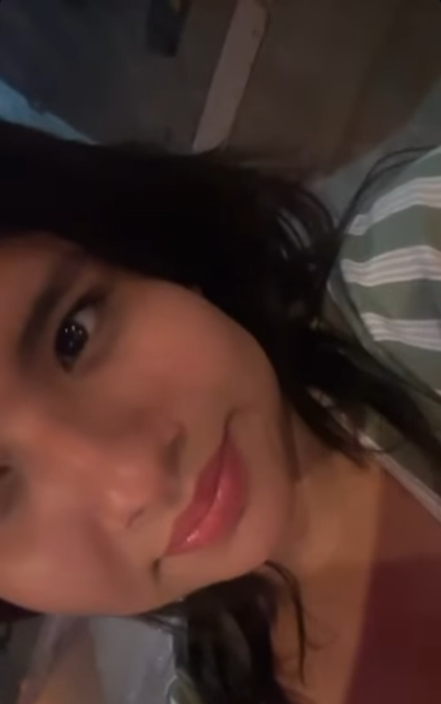
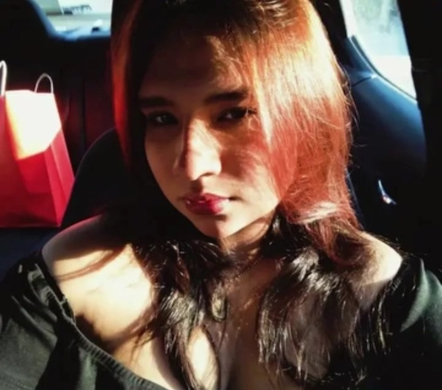
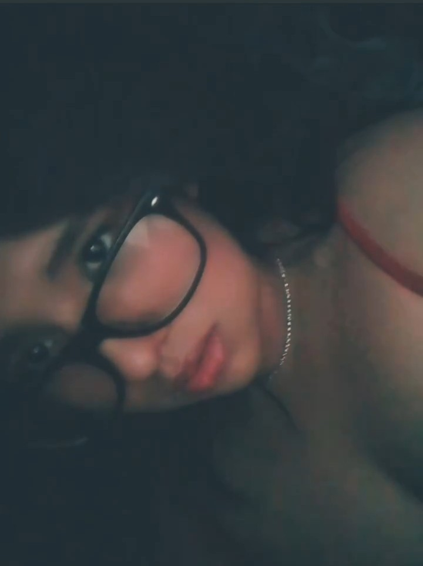
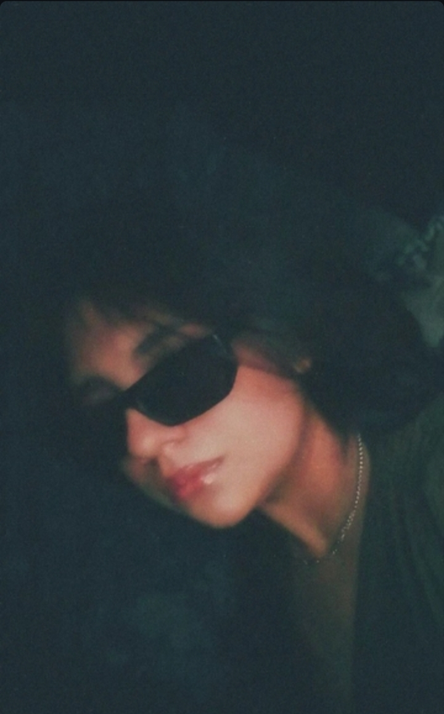
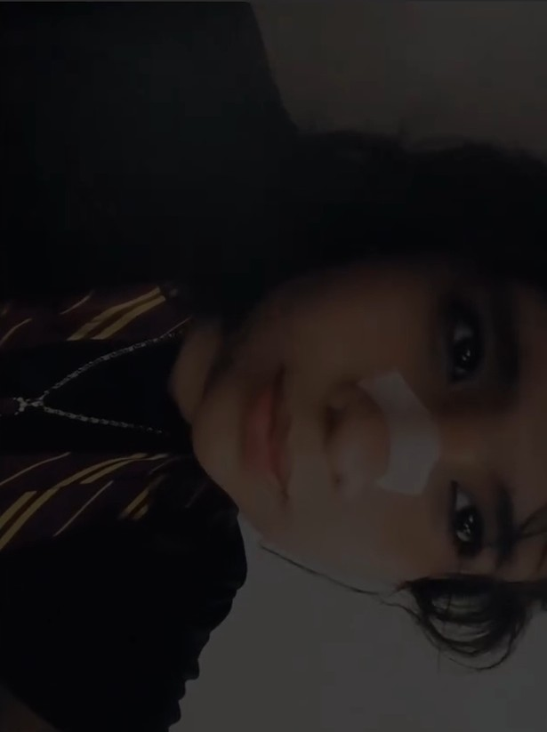
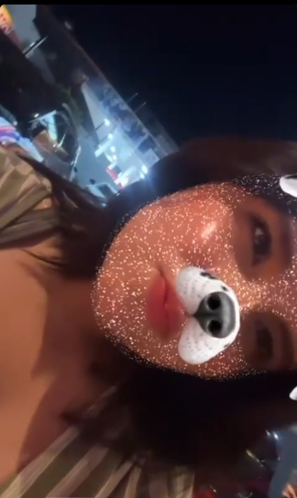

♡
Tus mensajes
Porque unas pocas palabras tuyas pueden cambiarme el día.
16 de octubre · Un día especial de una persona muy especial
Entre tantas personas en el mundo, ¡me siento muy agradecido de que la vida me haya dado la oportunidad de conocerte!
🎧
Cada canción me hace acordarme de ti.
La verdad, me parece increíble cómo alguien a quien todavía estoy conociendo puede alegrarme tanto el día. A veces basta con recibir un mensaje tuyo para sacarme una sonrisa, y ni hablar de tus audios, tus fotos y tus videos. Tienes una forma muy tuya de dejarme encantado.
Valió la pena esperar tanto tiempo; agradezco todos los días haber tomado la decisión de no renunciar al amor. Conocerte me recordó que todavía existen conexiones hermosas, que despiertan el deseo de seguir descubriendo más y más cosas sobre ti.
En tu cumpleaños, deseo que la vida te regale razones para sonreír, personas que te quieran bonito, sueños que se hagan realidad y momentos que algún día recuerdes con una sonrisa.
Me encantaría estar ahí para darte un abrazo y felicitarte en persona. Por ahora, te mando todo mi cariñoa través de esta "carta virtual". Ojalá estas palabras te hagan sentir un poquito especial, como tú has conseguido hacerme sentir a mí.
No sé qué nos tenga preparado la vida, pero me gusta estar conociéndote. Quiero seguir descubriendo tus gustos, tus sueños y todas esas pequeñas cosas que te hacen ser tú. Sin prisas, a nuestro ritmo, mensaje a mensaje.
Pequeños recuerdos
Algunas fotos bonitas para guardar en este pequeño regalo.






Porque unas pocas palabras tuyas pueden cambiarme el día.
Porque tus audios me dejan sonriendo más de lo que imaginas.
Porque cada cosa que descubro de ti me da ganas de saber más.
Preparé un mensajito más para ti. Toca el botón cuando quieras leerlo.